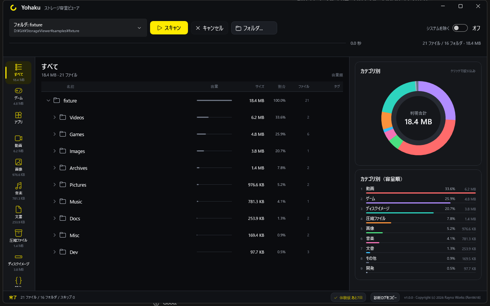

PC全体を用途別に横断集計
全ドライブをまとめて集計し、「用途（カテゴリ）」単位での容量が既定の見え方。ドライブやフォルダを順番にたどる必要がありません。
Windows用ディスク容量ビューア（WinUI 3）
フォルダ名ではなく、
ゲーム名・用途で容量が分かる
Yohaku（よはく）は、PC全体のディスク容量を「ゲーム」や「用途」という 視点で把握できるビューアです。全ドライブを横断して集計し、 システム領域は別枠に分離するので「自分のファイルで使っている容量」がすぐ分かります。
ダウンロードすると7日間、すべての機能を無料で使えます（体験版）。
継続利用にはライセンス購入が必要です。
ポータブル版はインストール不要。zipを展開してすぐ使えます。
現在のバージョン: 1.2.1
v1.1 からは任意のアップデート確認機能が入りました。確認そのものもしたくない方のために、アップデート確認なしの v1.0.0 も引き続き配布しています。ライセンスキーはどちらの版でも使えます。
v1.0.0 インストーラー版 ／ v1.0.0 ポータブル版（zip）
買い切り 定価 ¥1,980 ／ 発売記念 ¥1,480
※ 画面はイメージです。実際の画面とは異なります。
全ドライブをまとめて集計し、「用途（カテゴリ）」単位での容量が既定の見え方。ドライブやフォルダを順番にたどる必要がありません。
Steamのマニフェストからゲームタイトル単位で容量を表示。「Game 3」ではなく「VRChat」のように分かります。Steam に加え、Epic / GOG / Riot はゲーム名を解決し、HoYoPlay はパスから解決します。
Windows等のシステム領域は別枠に分離。解析結果とディスクの使用量を照合し、未解析分も表示するので、全体との整合が確認できます。
再生成可能なキャッシュなどには「安全度タグ」を付け、合計容量を表示。VRChat・Unity・Adobeのキャッシュなど、「消しても大丈夫そうか」の目安がつかめます。
自動判定が意図と異なる場合は、ユーザーがフォルダ単位で分類を修正できます。自分の使い方に合わせた集計結果になります。
左サイドバーのカテゴリ切替、中央の一覧、右の円グラフ・棒グラフの3ペイン構成。WinUI 3によるWindows 11に馴染む操作感です。
容量を食う項目を選んで、その場で Windows のゴミ箱へ移動できます（完全削除はしない）。実行前に確認ダイアログで対象と合計容量を表示します。システム領域など重要なパスは保護のため選択できません。
※ 画像はフィクスチャ（サンプルデータ・21ファイル / 18.4 MB）をスキャンした例です。実際の表示内容はお使いのPCの状態により異なります。

目的が「速く解析する」ことではなく「容量の中身を分かりやすく把握する」ことである、という観点での比較です。
| 観点 | 一般的な容量解析ツール | Yohaku |
|---|---|---|
| 対象の見せ方 | パス（フォルダ名）中心 | 用途・ゲーム名中心 |
| ゲーム認識 | なし（自分で確認） | Steamマニフェストから自動認識（Steam / Epic / GOG / Riot 等に対応） |
| システムの扱い | 使用領域に混在 | 別枠表示＋使用量との照合 |
| 安全度タグ | なし | 再生成可能なキャッシュ等にタグ表示 |
| UI | 従来型 | WinUI 3 |
買い切りのみで、月額料金や追加課金はありません。まずは7日間の体験版ですべての機能をお試しいただけます。
発売記念価格
¥1,480（税込）
定価 ¥1,980
発売記念価格の適用期間：リリース日から2週間（〜11月23日まで）
ご購入前に 利用規約 ・ 特定商取引法に基づく表記 をご確認ください
決済ページを開けませんでした。時間をおいて再度お試しください。解決しない場合は support@mikumiku.online へご連絡ください。
アップデート確認なし版（v1.0.0）: インストーラー ／ ポータブル（zip）
まずはダウンロードして7日間お試しいただけます（全機能・無料）。継続利用にはライセンス購入が必要です。
※ 価格はすべて税込です。ライセンスは買い切り（永久版）で、最大3台で利用できます。
動作環境はバージョン 1.2.1 時点のものです。 変更する場合はこのページで事前に告知します。
買い切りの有料ソフトです。定価は¥1,980（税込）で、リリース日から2週間は発売記念価格の¥1,480（税込）で販売します。月額料金はありません。
はい。ダウンロードすると7日間、すべての機能を無料で使えます（体験版）。継続利用にはライセンス購入が必要です。
購入後7日間であれば、理由を問わず無条件で返金に対応します。
Windows 11、および Windows 10（バージョン 2004 / ビルド 19041 以降）に対応しています。
いいえ。既定では「アップデートを確認」ボタンを押したときだけ、GitHub で最新版を確認します。設定で起動時の自動確認に変えることもできますが、新版があっても自動でダウンロード・インストールはされません。また、アップデート確認そのものがない v1.0.0（アップデート確認なし版）も配布しています。
購入したライセンスキーは、最大3台で利用できます。
購入完了画面にライセンスキーが表示され、同時に登録いただいたメールアドレスにも送付されます。アプリのライセンス入力欄にキーを貼り付けてください。
はい。v1.2 から、選択したファイル・フォルダを Windows のゴミ箱へ移動できます。完全削除は行いません。システム領域など重要なパスは保護のため選択できません。元に戻す場合はゴミ箱から復元してください。
不要です。通常権限で読める範囲を解析します。
スキャン・解析のデータが外部に送信されることはありません。解析はすべてPC内で完結します。通信が発生するのは、(1) ライセンスの確認、(2) アップデートの確認（既定は手動ボタン押下時のみ。設定で起動時確認に変更した場合のみ自動）、(3) フィードバックフォームを開くとき（ご自身のブラウザでの操作）のみです。
アプリ内の「フィードバック」ボタンからフォームを開いて送れます（ブラウザが開きます）。不具合の報告・機能の要望・質問にどうぞ。
速さではなく分かりやすさが目的です。用途やゲーム名で容量を把握できます。